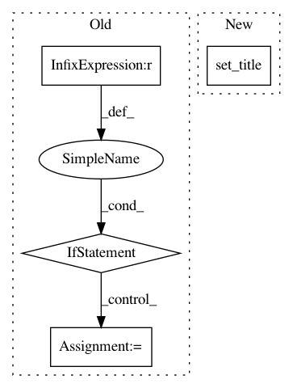

29f852d88e32f616437a6ca5cf6f886680523ede,batchflow/utils.py,,plot_results_by_config,#Any#Any#Any#Any#,56
Before Change
for y, (source, val) in enumerate(variables):
if n_configs == 1 and n_vars == 1:
ax = axs
elif n_configs == 1:
ax = axs[y]
elif n_vars == 1:
ax = axs[x]
else:
ax = axs[x, y]
(df[df["name"] == source]
.pivot(index="iteration", columns="repetition", values=val)
.rename(columns=lambda s: "rep " + str(s))
After Change
.pivot(index="iteration", columns="repetition", values=val)
.rename(columns=lambda s: "rep " + str(s))
.plot(ax=ax, **kwargs))
ax.set_title(config + "\n" + source + " " + val)
ax.set_xlabel("Iteration")
ax.set_ylabel(val.replace("_", " ").capitalize())
ax.grid(True)
ax.legend()
In pattern: SUPERPATTERN
Frequency: 3
Non-data size: 4
Instances
Project Name: analysiscenter/batchflow
Commit Name: 29f852d88e32f616437a6ca5cf6f886680523ede
Time: 2019-10-31
Author: 7520522+a-arefina@users.noreply.github.com
File Name: batchflow/utils.py
Class Name:
Method Name: plot_results_by_config
Project Name: nilmtk/nilmtk
Commit Name: 0ac7cecce4f147011037fcb79dfd57867b8329a8
Time: 2014-12-19
Author: jack-list@xlk.org.uk
File Name: nilmtk/metergroup.py
Class Name: MeterGroup
Method Name: plot_good_sections
Project Name: matplotlib/matplotlib
Commit Name: c1b6a1c39fdd4661930280c6098de55359c5a078
Time: 2017-11-24
Author: anntzer.lee@gmail.com
File Name: examples/animation/animation_demo.py
Class Name:
Method Name: